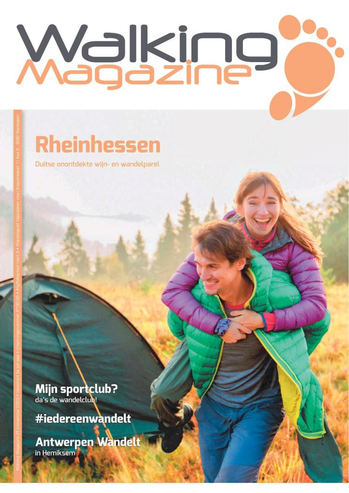

Walking Magazine
By Vicky | Posted on februari 10, 2021Vanaf 2021 verschijnt Walking Magazine 4 keer per jaar. Het federatietijdschrift van Wandelsport Vlaanderen vzw valt voortaan telkens de eerste week van maart, juni, september en december bij de lezers in de bus.

Walking Magazine informeert de wandelaar over wandelevenementen, interessante toeristische wandelplekjes, wandelnetwerken, wandelkledij en -accessoires. Als lid van Wandelsport Vlaanderen vzw ontvang je Walking Magazine gratis! Ben je geen lid? Geen probleem! Je kan ook een abonnement nemen en zo mis je geen enkel nummer van Walking Magazine. Ken je het magazine nog niet en wil je het eerst even ontdekken? Vraag dan een proefnummer aan!
Blader even mee in een van Walking Magazine door op de afbeelding te klikken.
